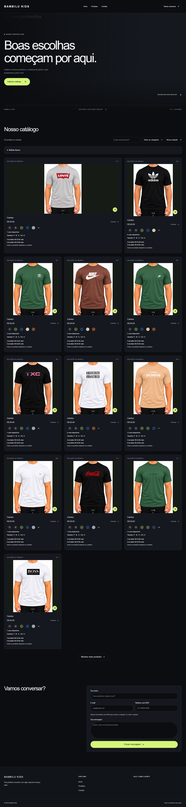
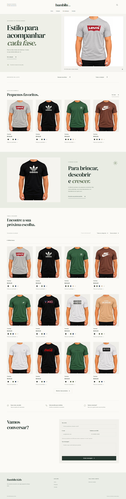

Comparação visual em 390, 768 e 1440 px. Antes: loja publicada. Depois: implementação local com os mesmos produtos. 05/11/2026.


As fotos são as imagens reais cadastradas no catálogo. Ainda não há logo, campanha infantil, categorias ou Instagram cadastrados. A apresentação usa marca tipográfica e links para seções existentes. Não há promessa de frete, trocas ou pagamento; a loja continua em modo vitrine. Nenhuma alteração foi publicada em produção nesta revisão.